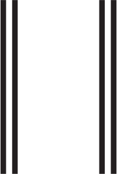

<div class="pages">
  <div class="page no-navbar" data-page="signorlogin" >
  
  
	<!-- Top Navbar 這頁沒用到 但不放 會掉上一頁的 header -->
	<div class="navbar">
		
		<div class="navbar-inner">
			<div class="left">
				<a href="#" class="back link">
					
				</a>
			</div>
			
			<div class="center sliding homeNavi">
			</div>
			
			
			<div class="right">
			  <a id="btn_signinorlogin" href="#">321</a>
			</div>
			
		</div>
		
	</div>
	<!-- End Navbar-->
	
	
	
    <div class="page-content indexBG">
      <div class="content-block" style="padding:0px;">
	  
		
		<div id="logo_page1">
			
		</div>
		<div id="slogan_page1">
			
		</div>

		<div id="langWrapper">
			<div id="btn_tw_wrapper"><div><a id="btn_signin" href="#">{{signup}}</a></div></div>
			<div id="btn_en_wrapper"><div><a id="btn_login" href="#">{{login}}</a></div></div>
		</div>
		
      </div>
    </div>
	

  </div>
</div>          